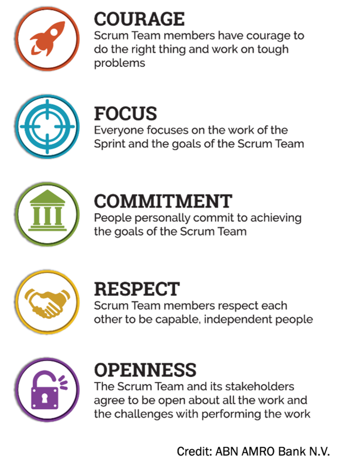

Sprint Central
What is Scrum?
Scrum is an agile framework that uses iterative cycles called sprints to manage projects.
It involves specific roles, events, artifacts, and values.
Each sprint ends with a working result and new feedback, so teams can adapt quickly.
Meet the Scrum Squad
Product Owner — The Visionary. Keeps the product backlog in order.
Scrum Master — The Coach. Makes sure Scrum rules are followed, removes blockers.
Development Team — The Makers. Turn ideas into real, working increments.
Scrum Values: The Team's Superpowers

The Scrum Artifacts
Product Backlog - an emergent, ordered list of what is needed to improve the product.
Sprint Backlog - a plan by and for the Developers. It is a highly visible, real-time picture of the work that the Developers plan to accomplish during the Sprint in order to achieve the Sprint Goal.
Increment - a concrete stepping stone toward the Product Goal. Each Increment is additive to all prior Increments and thoroughly verified, ensuring that all Increments work together.
The Sprint Timeline
- Sprint Planning - The team selects a set of high-priority items from the Product Backlog to work on during the sprint.
- Daily Scrum - The team meets daily to discuss progress, identify roadblocks, and coordinate their efforts.
- Sprint Review - At the end of the sprint, the team demonstrates the work they've completed to stakeholders and gathers feedback.
- Sprint Retrospective - The team reflects on the sprint, identifies areas for improvement, and adapts their process for the next sprint.
Why Scrum Works
Boosts:
- Fast feedback loops
- Handles changing requirements
- Improves teamwork
- Delivers value early
Perfect for:
- Creative projects
- Startups
- Software development
- Any project where requirements may change
Scrum in Action
Software Development
Teams can rapidly develop and deliver new software features. Using scrum, the team can break down the project into small, manageable tasks, prioritize them, and develop them over sprints.
Marketing
By breaking down larger projects into smaller tasks, marketing teams can better align their output with the needs of their users. They can also quickly adjust their strategies based on feedback from their customers. This allows them to navigate ambiguity and ensure that their marketing efforts meet their users' needs.
Spotify's Agile Model
Spotify uses a unique model incorporating squads, tribes, chapters, and guilds, demonstrating how Scrum can scale to support large organizations.
Dutch Railways
A successful project using Scrum was implemented by Dutch Railways after a previous project failed to deliver, according to Applied Frameworks.
Mayden's Transition
Mayden, a company specializing in healthcare applications, successfully transitioned from a waterfall approach to Scrum, says KnowledgeHut.